Видео: Перелом бедра — срочная операция
Что это за перелом
Перелом бедра (проксимального отдела бедренной кости) — это перелом верхней части бедренной кости. Перелом шейки бедра — перелом узкой части кости непосредственно под её округлой головкой. Перелом сразу под головкой называют субкапитальным.
- У многих пожилых людей кости становятся более хрупкими, в том числе из-за остеопороза. Поэтому перелом может произойти даже при обычном падении.
- Перелом верхней части бедренной кости обычно вызывает боль в паху или верхней части бедра. Большинство людей не могут встать или опереться на повреждённую ногу, нога может казаться короче и развёрнутой наружу. Однако при некоторых переломах человек может по-прежнему стоять или ходить, несмотря на травму.
- Если перелом бедра по-прежнему подозревают, несмотря на нормальный рентгеновский снимок, рекомендуется магнитно-резонансная томография (МРТ). Если МРТ недоступна в течение 24 часов или её нельзя выполнить, может применяться компьютерная томография (КТ).
- В большинстве случаев рекомендуют операцию. Она помогает уменьшить боль и раньше начать восстановление движений. Иногда при стабильном переломе или особых медицинских обстоятельствах рассматривают другие варианты лечения.
Источник: AAOS OrthoInfo; AAOS 2021; NICE CG124, 1.1.1
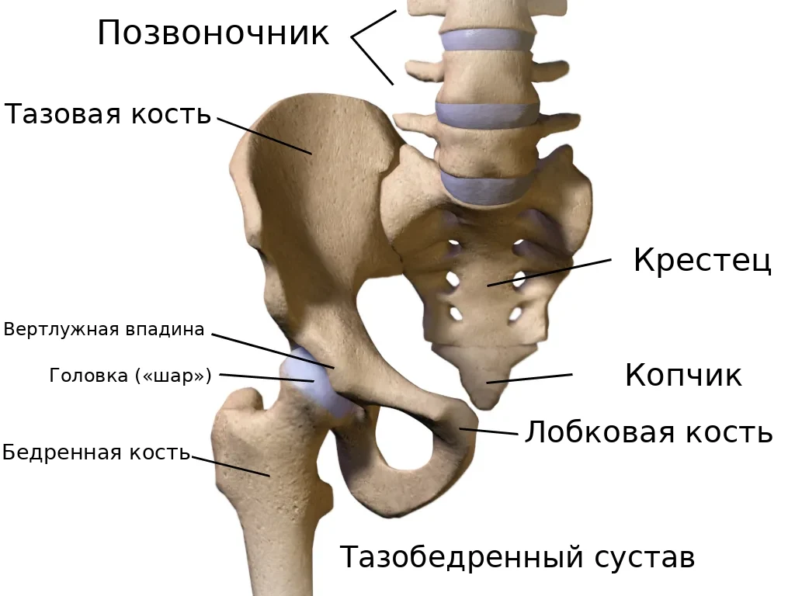
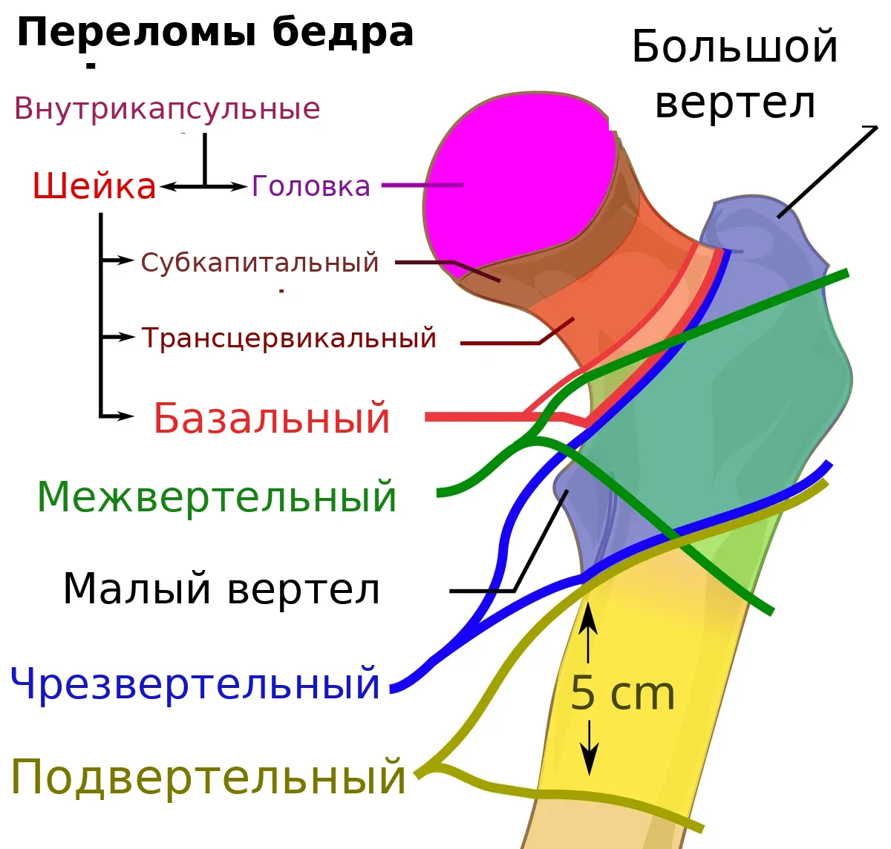
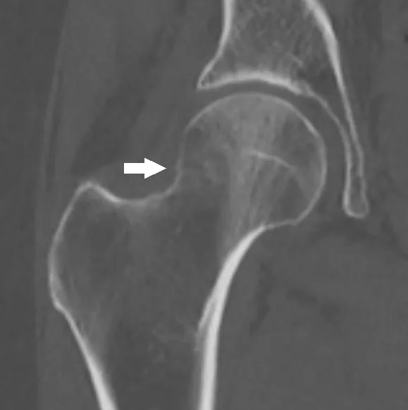
Из приёмного отделения — в отделение
Диагноз ставят в приёмном отделении по осмотру и рентгену. Затем вас переводят в ортопедическое отделение, где вы ждёте операцию.
- До разрешения медицинской команды не пытайтесь самостоятельно вставать или ходить. Персонал поможет изменить положение в кровати, провести гигиену и безопасно подготовиться к операции.
- Боль снимают сразу и регулярно проверяют. Если боль усилилась — попросите обезболивание. Если обычных лекарств мало, может применяться блокада нерва (обезболивающий укол около нерва).
- Это время используют, чтобы проверить анализы и при необходимости подготовить организм к операции.
Источник: NICE CG124, 1.3; AAOS 2021
Подготовка кожи перед операцией
Перед операцией персонал поможет очистить кожу. В зависимости от правил больницы для этого могут использоваться специальные антисептические салфетки или другие средства. Такая обработка уменьшает количество микробов на коже, но сама по себе не гарантирует предотвращения инфекции.
- Сообщите персоналу, если у вас аллергия на мыло, антисептики или хлоргексидин.
- Не брейте кожу в области операции сами.
- Сообщите, если есть рана, покраснение или раздражение кожи.
Источник: WHO (SSI); CDC, 2017
Зачем укол Клексана
После перелома бедра повышается риск образования тромбов. Поэтому медицинская команда оценивает риск тромбоза и кровотечения и назначает профилактику. Одним из препаратов является эноксапарин (Клексан). До операции его могут назначить, если операция откладывается; время введения зависит от плана операции и анестезии.
- Если планируется спинальная анестезия, между профилактической дозой эноксапарина и уколом в спину обычно необходимо не менее 12 часов. После лечебной, более высокой дозы интервал составляет не менее 24 часов. При нарушении функции почек и других факторах риска анестезиолог может потребовать дополнительных мер безопасности. Операцию также можно проводить под общим наркозом.
- После операции профилактику тромбов возобновляют, когда это безопасно. Если проводилась спинальная анестезия, первую профилактическую дозу эноксапарина вводят не ранее чем через 12 часов после спинального укола; также учитывают время операции, риск кровотечения и наличие катетера. Точное время определяет медицинская команда.
- Если вы принимаете дома разжижающие кровь лекарства — обязательно скажите об этом врачу.
Источник: AAOS 2021; NICE NG89; ASRA 2018 и 2025; инструкция Lovenox (FDA)
Еда, питьё и лекарства перед операцией
- Поскольку операция срочная, её точное время может изменяться. Не ешьте и не пейте без разрешения медицинской команды. Обязательно сообщите, когда вы в последний раз ели или пили. Если операция откладывается, уточняйте у персонала, когда разрешено пить и как будут восполнять жидкость, чтобы избежать обезвоживания.
- Сообщите врачам обо всех лекарствах, особенно о разжижающих кровь: варфарин (Coumadin), апиксабан (Eliquis), ривароксабан (Xarelto), дабигатран (Pradaxa), клопидогрел (Plavix). Они влияют на свёртываемость крови и на выбор анестезии; иногда перед операцией нужно подождать или скорректировать их действие.
- Обязательно сообщите врачу, если принимаете инсулин или другие лекарства от диабета, особенно эмпаглифлозин или дапаглифлозин. Укажите время последнего приёма. При срочной операции врач решит, какие препараты временно не давать, как контролировать сахар и нужно ли проверять кетоны. Некоторые лекарства повышают риск опасного осложнения — кетоацидоза, даже если сахар не очень высокий. Не принимайте и не отменяйте лекарства самостоятельно.
- Близкие: принесите список всех лекарств (или сами упаковки), которые пациент принимает дома.
Источник: ASA 2017 и 2023; NICE CG124, 1.2.2; AAOS 2021; ADA 2026, раздел 16
Какие бывают операции
При переломе шейки бедра без смещения травматолог-ортопед может предложить фиксацию винтами или специальной металлической конструкцией. Иногда рассматривают замену части сустава. При переломе шейки со смещением у пожилых пациентов обычно рекомендуют частичную или полную замену сустава. Полную замену рассматривают с учётом прежней подвижности, общего здоровья и ожидаемой самостоятельности после восстановления. Чрезвертельный перелом — другой вид перелома верхней части бедренной кости, не перелом шейки. Его могут фиксировать пластиной со скользящим винтом или внутрикостным (интрамедуллярным) штифтом; при нестабильных вариантах обычно используют гвоздь. Окончательный выбор делает травматолог-ортопед.
Источник: AAOS 2021; NICE CG124, 1.6; AAOS OrthoInfo
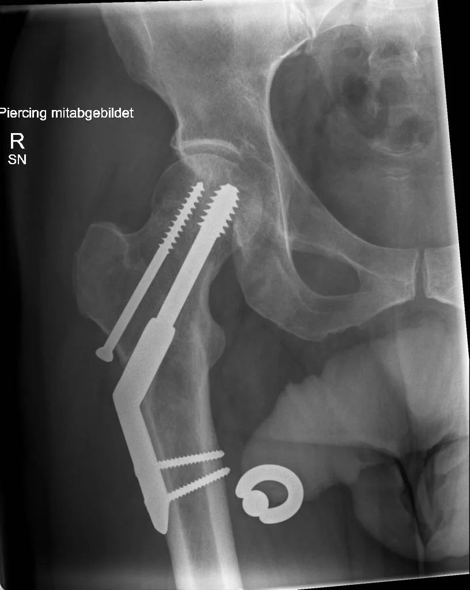
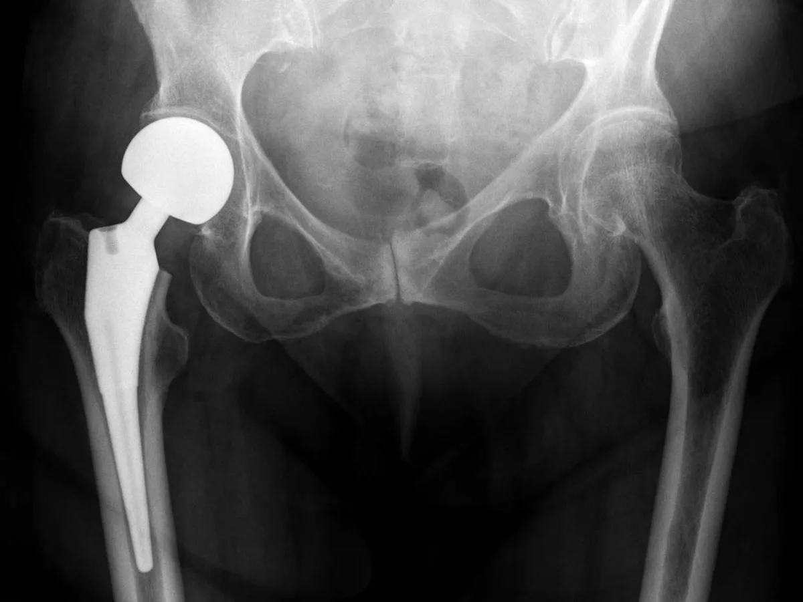
Когда операция
- Операцию стараются выполнить как можно раньше — обычно в день поступления или на следующий день (NICE), в течение 24–48 часов (AAOS).
- В Израиле Минздрав отслеживает долю пациентов, которых оперируют по поводу перелома шейки бедра в течение 48 часов после госпитализации. По стране этот показатель в 2024 году составил 89%.
- Если обнаружены опасные нарушения здоровья, команда одновременно проводит необходимое лечение и подготовку, стараясь избежать необоснованной задержки операции.
Источник: NICE CG124, 1.2; AAOS 2021; Минздрав Израиля, отчёт 2013–2024
После операции
- Подъём: обычно на следующий день после операции, с физиотерапевтом, если состояние позволяет. Ранние движения помогают предотвратить тромбы, пневмонию и пролежни.
- Нагрузка на ногу: после многих операций по поводу перелома бедра разрешают переносить на оперированную ногу вес тела настолько, насколько позволяет боль. Не нужно специально наступать с усилием. Какую нагрузку разрешили именно вам, уточните у врача.
- После замены сустава могут понадобиться особые меры предосторожности при сидении, наклонах и сне (обычно первые 6 недель), чтобы протез не вывихнулся. Они зависят от хирургического доступа — какие нужны именно вам, объяснят травматолог-ортопед и физиотерапевт (AAOS OrthoInfo).
- Обезболивание: регулярное, чтобы можно было двигаться и заниматься.
- После операции профилактика тромбов может продолжаться и после выписки. При переломах бедра часто применяют инъекции препаратов, уменьшающих свёртываемость крови. Согласно NICE, профилактику обычно назначают на месяц, если риск тромбоза превышает риск кровотечения. Конкретный препарат и продолжительность определяет врач. Не прекращайте назначенное лечение самостоятельно.
- Восстановлением занимается команда: травматолог-ортопед, терапевт или гериатр, медсёстры, физиотерапевт, эрготерапевт.
- Перед выпиской обсудите с врачом проверку на остеопороз, способы предотвращения падений и план дальнейшей реабилитации.
Источник: NICE CG124, 1.6–1.8; NICE NG89, 1.11.2; AAOS 2021; ACCP 2012
Спутанность сознания (делирий) и как помочь близким
У пожилых людей после перелома и операции может появиться внезапная спутанность: человек путает время и место, становится беспокойным или, наоборот, сонливым. Спутанность может начаться ещё до операции. Обычно она временная, но иногда сохраняется дольше и всегда требует оценки медицинской команды. Сразу скажите о ней персоналу.
- Принесите очки, слуховой аппарат, зубные протезы.
- Чаще навещайте, говорите спокойно, напоминайте, где человек находится и какой сегодня день.
- Расскажите персоналу, каким человек был до травмы — это помогает заметить изменения.
Источник: NICE CG124, 1.8.3; NICE CG103
Когда срочно обращаться за помощью
В больнице немедленно сообщите медсестре. После выписки срочно свяжитесь с отделением или обратитесь за медицинской помощью при температуре, нарастающем покраснении, отёке или выделениях из раны, новой сильной боли в бедре, если нога внезапно перестала держать или изменила положение, при отёке и боли в икре. При внезапной одышке, боли в груди, обмороке или выраженном затруднении дыхания немедленно вызывайте скорую помощь по номеру 101 («Маген Давид Адом»).
Первые часы после операции: как помочь и не помешать
- Особое время. Первые часы и первые сутки после операции — время, когда за человеком наблюдают особенно внимательно. Чаще всего всё идёт спокойно, но иногда помощь нужна очень быстро. Поэтому проход к пациенту и медицинскому оборудованию всегда должен оставаться свободным.
- Медсестра проверяет. После возвращения в отделение медсестра регулярно проверяет давление, пульс, частоту дыхания, насыщение крови кислородом, температуру и уровень сознания, а также осматривает область операции. В нашем отделении обычно так: сразу при поступлении из операционной, затем через час, ещё через час, затем через два часа, а дальше каждые четыре часа в течение первых суток. При необходимости проверки делают чаще. Это плановое наблюдение и не обязательно означает, что что-то не так. Если назначен эноксапарин (Клексан), после некоторых ортопедических операций в нашем отделении первый послеоперационный укол обычно делают примерно через двенадцать часов. Время определяет врач с учётом остановки кровотечения, вида операции и спинальной или эпидуральной анестезии.
- Свободный проход. Пожалуйста, оставляйте свободный проход к кровати со всех сторон. Не ставьте стулья и сумки вплотную к кровати и в проходе. Медсестра и врач должны быстро подойти к пациенту, а тележка — подъехать с лекарствами и оборудованием.
- Меньше людей — лучше. Лучше, если одновременно рядом с пациентом будет не больше одного-двух близких, если это допускают правила отделения. Когда персонал подходит к пациенту, пожалуйста, освободите место. Если вас попросили выйти из палаты, выполните просьбу. Позже можно уточнить причину и задать вопросы.
- Только с разрешения. После наркоза бывают тошнота и рвота, а ослабленный человек может поперхнуться. После операции не давайте пациенту еду и питьё без разрешения медсестры. Когда пациент достаточно проснулся, может безопасно глотать и нет других ограничений, ему могут разрешить пить и есть. Иногда начинают с небольшого количества воды, затем переходят к еде. Когда и что можно, решает медицинская команда.
- Борта и кнопка. Борта кровати поднимают по решению персонала, с учётом состояния пациента. Они подходят не всем и не заменяют помощь при вставании. Не поднимайте и не опускайте борта самостоятельно. Кнопка вызова должна быть под рукой. Вставайте только с разрешения медицинской команды, первый раз — с помощью персонала.
- Если что-то не так. Если пациента тошнит, ему трудно дышать, он стал необычно сонливым, его трудно разбудить, появилась внезапная спутанность сознания или сильное беспокойство, боль резко усилилась либо повязка быстро пропитывается кровью — немедленно позовите медсестру. Нажмите кнопку вызова, а при тяжёлом состоянии громко зовите персонал. Не давайте самостоятельно еду, питьё или лекарства и не пытайтесь поднимать пациента.
Защита от инфекции в больнице: что могут сделать пациент и близкие
- Чистые руки. Обрабатывайте руки антисептиком или мойте с мылом при входе в палату и выходе из неё, до и после прикосновения к пациенту. После туалета, перед едой и при видимом загрязнении мойте руки водой с мылом. Антисептик обычно есть у входа в палату или у кровати. Можно вежливо попросить персонал обработать руки перед осмотром — это нормально.
- Рана и трубки. Не трогайте рану, повязку, дренаж, катетер и капельницу и не снимайте повязку сами. Если повязка намокла, загрязнилась или сползла, скажите медсестре.
- Чужое не трогать. Не садитесь на чужие кровати, не трогайте оборудование, раны и вещи других пациентов.
- Не заходите в чужие палаты. Без необходимости не ходите по другим палатам и отделениям больницы. Близким с температурой, кашлем, насморком, рвотой или поносом лучше не приходить, пока они не выздоровеют.
- Устойчивые бактерии. Некоторые бактерии устойчивы к антибиотикам. Если у пациента обнаружили такие бактерии, персонал может назначить дополнительные меры защиты: изоляцию, использование халатов и перчаток, особые правила посещения. Конкретные меры зависят от вида бактерии и ситуации. Если персонал сообщил об особых мерах предосторожности, строго выполняйте инструкции — это помогает защищать пациентов и близких.
- Повышенный риск. Особенно внимательно соблюдайте меры профилактики при открытых переломах, значительном повреждении мягких тканей, наружном фиксирующем аппарате (спицы или стержни проходят через кожу в кость), диабете и после сложных или длительных операций. В этих ситуациях риск инфекционных осложнений может быть выше.
- Сразу сообщите медсестре, если: появились температура или озноб; покраснение, усиливающаяся боль, отёк или выделения из раны; покраснение или выделения вокруг мест входа спиц или стержней наружного фиксатора либо вокруг места установки внутривенного катетера.
Источники
- AAOS, Management of Hip Fractures in Older Adults, CPG 2021
- AAOS OrthoInfo, Hip Fractures
- NICE CG124, Hip fracture: management, Recommendations
- ACCP (CHEST), Prevention of VTE in Orthopedic Surgery Patients, 9th ed., 2012
- ASRA, Regional Anesthesia in the Patient Receiving Antithrombotic or Thrombolytic Therapy, 4th ed., 2018
- FDA, Lovenox (enoxaparin) label
- Минздрав Израиля — Национальная программа показателей качества, сводный отчёт 2013–2024
- Niv Y. et al., Israeli National Program for Quality Indicators: hip fracture repair within 48 hours, 2021
- ASA, Practice Guidelines for Preoperative Fasting, Anesthesiology 2017
- AAOS OrthoInfo, Total Hip Replacement (Other Precautions)
- CDC, Guideline for the Prevention of Surgical Site Infection, 2017
- Маген Давид Адом — официальный сайт
- NICE NG89, Venous thromboembolism in over 16s, rec. 1.11.2–1.11.3
- ASRA, Regional anesthesia in the patient receiving antithrombotic or thrombolytic therapy, 5th ed., 2025
- ADA, Standards of Care in Diabetes—2026, section 16
- WHO, Global Guidelines for the Prevention of Surgical Site Infection (2016/2018)
- NICE CG103, Delirium: prevention, diagnosis and management
סרטון: שבר בירך — ניתוח דחוף
מה השבר הזה
שבר בירך הוא שבר בחלק העליון של עצם הירך. שבר בצוואר הירך הוא שבר בחלק הצר של העצם, מיד מתחת לראש העגול שלה. שבר מיד מתחת לראש נקרא שבר תת־ראשי.
- אצל אנשים מבוגרים רבים העצמות נעשות שבירות יותר, בין היתר בגלל אוסטאופורוזיס. לכן שבר עלול לקרות גם בנפילה רגילה.
- שבר בחלק העליון של עצם הירך גורם בדרך כלל לכאב במפשעה או בחלק העליון של הירך. רוב האנשים אינם יכולים לעמוד או להישען על הרגל הפגועה, והרגל עלולה להיראות קצרה יותר ומסובבת החוצה. עם זאת, בחלק מהשברים אדם עדיין יכול לעמוד או ללכת למרות הפציעה.
- אם עדיין יש חשד לשבר בירך למרות צילום רנטגן תקין, מומלץ לבצע MRI. אם MRI אינו זמין תוך 24 שעות או שלא ניתן לבצעו, אפשר להשתמש ב־CT.
- ברוב המקרים ממליצים על ניתוח. הוא עוזר להפחית את הכאב ולהתחיל מוקדם יותר לשקם את התנועה. לפעמים, בשבר יציב או בנסיבות רפואיות מיוחדות, שוקלים אפשרויות טיפול אחרות.
מקור: AAOS OrthoInfo; AAOS 2021; NICE CG124, 1.1.1
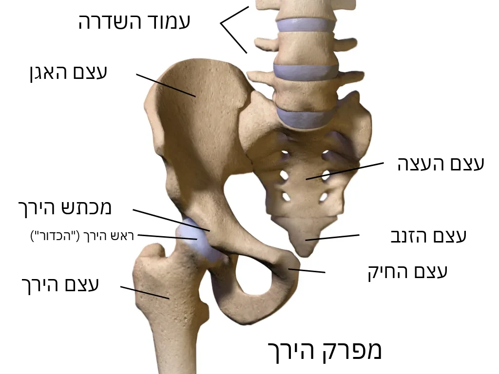
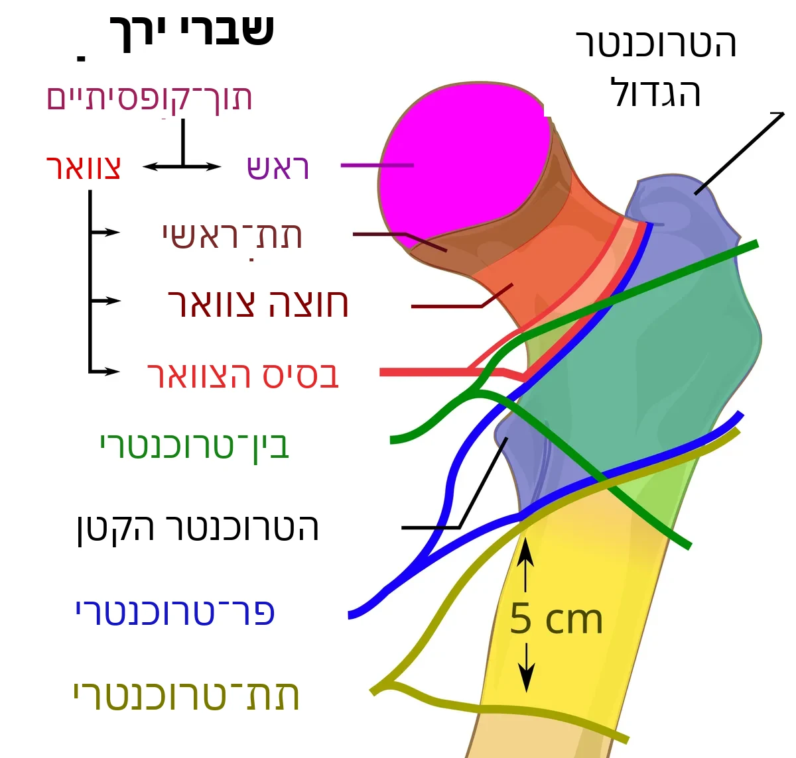
מהמיון למחלקה
את האבחנה קובעים במיון לפי בדיקה וצילום רנטגן. אחר כך עוברים למחלקה האורתופדית ושם ממתינים לניתוח.
- עד שהצוות הרפואי מתיר, אל תנסו לקום או ללכת בעצמכם. הצוות יעזור לשנות תנוחה במיטה, לשמור על היגיינה ולהתכונן לניתוח בבטחה.
- בכאב מטפלים מיד ובודקים באופן קבוע. אם הכאב התגבר — בקשו משכך כאבים. אם התרופות הרגילות לא מספיקות, ייתכן שתינתן חסימה עצבית (זריקה משככת כאב ליד העצב).
- בזמן הזה בודקים בדיקות דם, ואם צריך — מכינים את הגוף לניתוח.
מקור: NICE CG124, 1.3; AAOS 2021
הכנת העור לפני הניתוח
לפני הניתוח הצוות יעזור לנקות את העור. בהתאם לנהלי בית החולים ייתכן שישתמשו לשם כך במגבונים אנטיספטיים מיוחדים או באמצעים אחרים. טיפול כזה מפחית את כמות החיידקים על העור, אבל כשלעצמו אינו מבטיח מניעת זיהום.
- דווחו לצוות אם יש לכם אלרגיה לסבון, לחומרי חיטוי או לכלורהקסידין.
- אל תגלחו בעצמכם את העור באזור הניתוח.
- דווחו אם יש פצע, אדמומיות או גירוי בעור.
מקור: WHO (SSI); CDC, 2017
למה זריקת קלקסן
אחרי שבר בירך עולה הסיכון להיווצרות קרישי דם. לכן הצוות הרפואי מעריך את הסיכון לקרישה ולדימום ונותן טיפול מונע. אחת התרופות היא אנוקסאפרין (קלקסן). לפני הניתוח ייתכן שייתנו אותה אם הניתוח נדחה; זמן ההמתנה תלוי בתוכנית הניתוח וההרדמה.
- אם מתוכננת הרדמה ספינלית, בדרך כלל נדרשות לפחות 12 שעות בין מנה מונעת של אנוקסאפרין לבין הזריקה בגב. אחרי מנה טיפולית, גבוהה יותר, המרווח הוא לפחות 24 שעות. בפגיעה בתפקוד הכליות ובגורמי סיכון אחרים, הרופא המרדים עשוי לדרוש אמצעי בטיחות נוספים. אפשר לבצע את הניתוח גם בהרדמה כללית.
- אחרי הניתוח מחדשים את מניעת הקרישים כשהדבר בטוח. אם בוצעה הרדמה ספינלית, את המנה המונעת הראשונה של אנוקסאפרין נותנים לא לפני 12 שעות אחרי הזריקה בגב; מביאים בחשבון גם את זמן הניתוח, את הסיכון לדימום ואם יש צנתר. את הזמן המדויק קובע הצוות הרפואי.
- אם אתם נוטלים בבית תרופות לדילול הדם — חובה לספר לרופא.
מקור: AAOS 2021; NICE NG89; ASRA 2018, 2025; Lovenox (FDA)
אוכל, שתייה ותרופות לפני הניתוח
- מאחר שהניתוח דחוף, המועד המדויק שלו עשוי להשתנות. אל תאכלו ואל תשתו ללא אישור הצוות הרפואי. חובה לספר מתי אכלתם או שתיתם לאחרונה. אם הניתוח נדחה, בררו עם הצוות מתי מותר לשתות ואיך ישלימו לכם נוזלים, כדי למנוע התייבשות.
- ספרו לרופאים על כל התרופות, ובמיוחד על תרופות לדילול הדם: וורפרין (Coumadin), אפיקסבן (Eliquis), ריברוקסבן (Xarelto), דביגטרן (Pradaxa), קלופידוגרל (Plavix). הן משפיעות על קרישת הדם ועל בחירת ההרדמה; לפעמים צריך לחכות לפני הניתוח או לתקן את השפעתן.
- חובה לספר לרופא אם אתם נוטלים אינסולין או תרופות אחרות לסוכרת, ובמיוחד אמפגליפלוזין או דפגליפלוזין. ציינו מתי נטלתם אותן לאחרונה. בניתוח דחוף הרופא יחליט אילו תרופות לא לתת זמנית, איך לעקוב אחר הסוכר והאם לבדוק קטונים. חלק מהתרופות מגבירות את הסיכון לסיבוך מסוכן — חמצת קטוטית, גם כשהסוכר אינו גבוה במיוחד. אל תיטלו ואל תפסיקו תרופות על דעת עצמכם.
- בני המשפחה: הביאו רשימה של כל התרופות (או את האריזות עצמן) שהמטופל נוטל בבית.
מקור: ASA 2017, 2023; NICE CG124, 1.2.2; AAOS 2021; ADA 2026
אילו ניתוחים יש
בשבר בצוואר הירך ללא תזוזה המנתח עשוי להציע קיבוע בברגים או במתקן מתכת מיוחד. לפעמים שוקלים החלפה של חלק מהמפרק. בשבר בצוואר הירך עם תזוזה, אצל מטופלים מבוגרים, בדרך כלל ממליצים על החלפה חלקית או מלאה של המפרק. החלפה מלאה נשקלת לפי יכולת התנועה הקודמת, המצב הבריאותי הכללי והעצמאות הצפויה אחרי השיקום. שבר בין־טרוכנטרי הוא סוג אחר של שבר בחלק העליון של עצם הירך, ולא שבר בצוואר. אפשר לקבע אותו בפלטה עם בורג מחליק או במסמר תוך־לשדי; בסוגים לא יציבים בדרך כלל משתמשים במסמר. את הבחירה הסופית עושה המנתח.
מקור: AAOS 2021; NICE CG124, 1.6; AAOS OrthoInfo
מתי הניתוח
- משתדלים לבצע את הניתוח מוקדם ככל האפשר — בדרך כלל ביום הקבלה או למחרת (NICE), תוך 24–48 שעות (AAOS).
- בישראל משרד הבריאות עוקב אחר שיעור המטופלים שעוברים ניתוח בשל שבר בצוואר הירך תוך 48 שעות מהאשפוז. בשנת 2024 עמד השיעור הארצי על 89%.
- אם מתגלות הפרעות בריאותיות מסוכנות, הצוות נותן במקביל את הטיפול הנדרש ומכין לניתוח, ומשתדל להימנע מעיכוב לא מוצדק של הניתוח.
מקור: NICE CG124, 1.2; AAOS 2021; משרד הבריאות, דוח 2013–2024
אחרי הניתוח
- קימה: בדרך כלל למחרת הניתוח, עם פיזיותרפיסט, אם המצב מאפשר. תנועה מוקדמת עוזרת למנוע קרישים, דלקת ריאות ופצעי לחץ.
- דריכה על הרגל: לאחר ניתוחים רבים בעקבות שבר בירך מותר לשאת משקל גוף על הרגל המנותחת לפי יכולתכם ובהתאם לכאב. אין צורך לדרוך בכוח. בררו עם הרופא איזו דריכה מותרת לכם באופן אישי.
- אחרי החלפת מפרק ייתכן שיידרשו אמצעי זהירות מיוחדים בישיבה, בכפיפה ובשינה (בדרך כלל ב־6 השבועות הראשונים) כדי שהתותבת לא תצא ממקומה. הם תלויים בגישה הניתוחית — אילו מהם נדרשים לכם, יסבירו המנתח והפיזיותרפיסט (AAOS OrthoInfo).
- שיכוך כאבים: קבוע, כדי שתוכלו לזוז ולהתאמן.
- מניעת קרישים עשויה להימשך גם אחרי השחרור. בשברים בירך משתמשים לעיתים קרובות בזריקות של תרופות המפחיתות את קרישת הדם. לפי NICE, בדרך כלל נותנים מניעה למשך חודש, אם הסיכון לקרישה גבוה מהסיכון לדימום. את התרופה ואת משך הטיפול קובע הרופא. אל תפסיקו את הטיפול שנקבע על דעת עצמכם.
- בשיקום מטפל צוות: מנתח, רופא פנימאי או גריאטר, אחיות, פיזיותרפיסט, מרפא בעיסוק.
- לפני השחרור שוחחו עם הרופא על בדיקה לאוסטאופורוזיס, על דרכים למניעת נפילות ועל תוכנית ההמשך לשיקום.
מקור: NICE CG124, 1.6–1.8; NICE NG89, 1.11.2; AAOS 2021; ACCP 2012
בלבול (דליריום) ואיך המשפחה יכולה לעזור
אצל אנשים מבוגרים, אחרי שבר וניתוח, עלול להופיע בלבול פתאומי: האדם מאבד התמצאות בזמן ובמקום, נעשה חסר מנוחה או להפך — ישנוני. הבלבול יכול להתחיל עוד לפני הניתוח. בדרך כלל הוא זמני, אבל לפעמים נמשך זמן רב יותר, ותמיד נדרשת הערכה של הצוות הרפואי. דווחו עליו לצוות מיד.
- הביאו משקפיים, מכשיר שמיעה ותותבות שיניים.
- בקרו לעיתים קרובות, דברו בשקט, הזכירו איפה האדם נמצא ואיזה יום היום.
- ספרו לצוות איך האדם היה לפני הפציעה — זה עוזר לזהות שינויים.
מקור: NICE CG124, 1.8.3; NICE CG103
מתי לפנות לעזרה דחופה
בבית החולים דווחו מיד לאחות. אחרי השחרור פנו בדחיפות למחלקה או לקבלת טיפול רפואי אם יש חום, אודם או נפיחות שמתגברים או הפרשה מהפצע, כאב חדש וחזק בירך, אם הרגל פתאום הפסיקה לשאת משקל או שינתה מנח, או נפיחות וכאב בשוק. במקרה של קוצר נשימה פתאומי, כאב בחזה, עילפון או קושי חמור בנשימה, הזעיקו מיד אמבולנס של מגן דוד אדום בטלפון 101.
השעות הראשונות אחרי הניתוח: איך לעזור ולא להפריע
- זמן מיוחד. השעות הראשונות והיממה הראשונה אחרי ניתוח הן זמן שבו עוקבים אחרי המטופל בתשומת לב מיוחדת. ברוב המקרים הכול עובר בשקט, אבל לפעמים צריך עזרה מהר מאוד. לכן הדרך אל המטופל ואל הציוד הרפואי צריכה להישאר פנויה תמיד.
- האחות בודקת. אחרי החזרה למחלקה, האחות בודקת באופן קבוע לחץ דם, דופק, קצב נשימה, ריווי חמצן בדם, חום ורמת הכרה, ובודקת גם את אזור הניתוח. במחלקה שלנו בדרך כלל כך: מיד בקבלה מחדר הניתוח, אחר כך אחרי שעה, אחרי עוד שעה, אחר כך אחרי שעתיים, ומשם כל ארבע שעות במשך היממה הראשונה. בעת הצורך בודקים לעיתים קרובות יותר. זה מעקב מתוכנן, והוא לא בהכרח אומר שמשהו לא בסדר. אם נרשם אנוקספרין, קלקסן, אחרי חלק מהניתוחים האורתופדיים במחלקה שלנו הזריקה הראשונה שלאחר הניתוח ניתנת בדרך כלל כשתים עשרה שעות אחרי הניתוח. הרופא קובע את המועד לפי מצב הדימום, סוג הניתוח וההרדמה הספינלית או האפידורלית.
- מעבר פנוי. בבקשה, השאירו מעבר פנוי למיטה מכל הצדדים. אל תעמידו כיסאות ותיקים צמוד למיטה ובמעבר. האחות והרופא צריכים להגיע מהר אל המטופל, ועגלת התרופות והציוד צריכה להגיע עד אליו.
- פחות אנשים, יותר טוב. עדיף שליד המטופל יהיו בו זמנית לא יותר מאחד או שניים מבני המשפחה, אם נהלי המחלקה מאפשרים זאת. כשהצוות ניגש למטופל, בבקשה פנו מקום. אם ביקשו מכם לצאת מהחדר, עשו זאת. אחר כך אפשר לשאול על הסיבה ולשאול שאלות.
- רק באישור. אחרי הרדמה יכולות להיות בחילה והקאה, ואדם חלש עלול להיחנק. אחרי ניתוח אל תתנו למטופל אוכל ושתייה בלי אישור של האחות. כשהמטופל ער מספיק, יכול לבלוע בבטחה ואין הגבלות אחרות, ירשו לו לשתות ולאכול. לפעמים מתחילים בכמות קטנה של מים ואחר כך עוברים לאוכל. מתי ומה מותר, הצוות הרפואי מחליט.
- מעקות וכפתור. את מעקות המיטה מרימים לפי החלטת הצוות, בהתאם למצב המטופל. הם לא מתאימים לכולם ולא מחליפים עזרה בקימה. אל תרימו ואל תורידו את המעקות בעצמכם. כפתור הקריאה צריך להיות בהישג יד. קמים רק באישור הצוות הרפואי, ובפעם הראשונה בעזרת הצוות.
- אם משהו לא בסדר. אם למטופל יש בחילה, קשה לו לנשום, הוא ישנוני באופן חריג, קשה להעיר אותו, הופיע בלבול פתאומי או אי שקט חזק, הכאב התגבר מאוד, או שהחבישה נספגת בדם במהירות, קראו מיד לאחות. לחצו על כפתור הקריאה, ובמצב קשה קראו לצוות בקול רם. אל תתנו בעצמכם אוכל, שתייה או תרופות, ואל תנסו להרים את המטופל.
מניעת זיהומים בבית החולים: מה יכולים לעשות המטופל והמשפחה
- ידיים נקיות. חטאו ידיים בתכשיר לחיטוי ידיים או רחצו אותן במים וסבון בכניסה לחדר וביציאה ממנו, לפני ואחרי מגע במטופל. אחרי השירותים, לפני האוכל וכשהידיים מלוכלכות באופן נראה לעין, רחצו ידיים במים וסבון. תכשיר לחיטוי ידיים נמצא בדרך כלל בכניסה לחדר או ליד המיטה. אפשר לבקש בנימוס מהצוות לחטא ידיים לפני הבדיקה.
- פצע וצינורות. אל תיגעו בפצע, בחבישה, בנקז, בקטטר ובעירוי, ואל תסירו את החבישה בעצמכם. אם החבישה נרטבה, התלכלכה או זזה, ספרו לאחות.
- לא לגעת בשל אחרים. אל תשבו על מיטות של מטופלים אחרים, ואל תיגעו בציוד, בפצעים ובחפצים שלהם.
- לא להיכנס לחדרי מטופלים אחרים. אל תסתובבו ללא צורך בחדרים ובמחלקות אחרות בבית החולים. בני משפחה עם חום, שיעול, נזלת, הקאות או שלשול, עדיף שלא יבואו לבקר עד שיחלימו.
- חיידקים עמידים. יש חיידקים שעמידים לאנטיביוטיקה. אם נמצאו חיידקים כאלה אצל המטופל, הצוות עשוי להורות על אמצעי זהירות נוספים: בידוד, שימוש בחלוקים ובכפפות וכללים מיוחדים לביקורים. האמצעים נקבעים לפי סוג החיידק והמצב. אם הצוות הודיע על הנחיות מיוחדות, הקפידו לפעול לפיהן כדי להגן על המטופלים ועל בני המשפחה.
- סיכון מוגבר. חשוב במיוחד להקפיד על מניעת זיהומים בשברים פתוחים, בפגיעה משמעותית ברקמות הרכות, בקיבוע חיצוני (פינים או חוטי מתכת שעוברים דרך העור אל העצם), בסוכרת ואחרי ניתוחים מורכבים או ממושכים. במצבים אלה הסיכון לסיבוכים זיהומיים עלול להיות גבוה יותר.
- דווחו מיד לאחות אם: הופיעו חום או צמרמורת; אודם, כאב שמתגבר, נפיחות או הפרשה מהפצע; אודם או הפרשה סביב מקומות כניסת הפינים או חוטי המתכת של הקיבוע החיצוני, או סביב מקום כניסת העירוי לווריד.
מקורות
- AAOS, Management of Hip Fractures in Older Adults, CPG 2021
- AAOS OrthoInfo, Hip Fractures
- NICE CG124, Hip fracture: management, Recommendations
- ACCP (CHEST), Prevention of VTE in Orthopedic Surgery Patients, 9th ed., 2012
- ASRA, Regional Anesthesia in the Patient Receiving Antithrombotic or Thrombolytic Therapy, 4th ed., 2018
- FDA, Lovenox (enoxaparin) label
- משרד הבריאות — התוכנית הלאומית למדדי איכות, דוח מסכם 2013–2024
- Niv Y. et al., Israeli National Program for Quality Indicators: hip fracture repair within 48 hours, 2021
- ASA, Practice Guidelines for Preoperative Fasting, Anesthesiology 2017
- AAOS OrthoInfo, Total Hip Replacement (Other Precautions)
- CDC, Guideline for the Prevention of Surgical Site Infection, 2017
- Magen David Adom (מגן דוד אדום) — official site
- NICE NG89, Venous thromboembolism in over 16s, rec. 1.11.2–1.11.3
- ASRA, Regional anesthesia in the patient receiving antithrombotic or thrombolytic therapy, 5th ed., 2025
- ADA, Standards of Care in Diabetes—2026, section 16
- WHO, Global Guidelines for the Prevention of Surgical Site Infection (2016/2018)
- NICE CG103, Delirium: prevention, diagnosis and management
فيديو: كسر الورك — عملية عاجلة
ما هو هذا الكسر
كسر الورك هو كسر في الجزء العلوي من عظم الفخذ. وكسر عنق الفخذ هو كسر في الجزء الضيق من العظم مباشرةً تحت رأسه المستدير. ويُسمّى الكسر الواقع مباشرةً تحت الرأس كسرًا تحت الرأس.
- لدى كثير من كبار السن تصبح العظام أكثر هشاشة، ومن الأسباب هشاشة العظام. لذلك قد يحدث الكسر حتى عند سقوط عادي.
- يسبب كسر الورك عادةً ألمًا في المنطقة الأربية أو أعلى الفخذ. لا يستطيع معظم الأشخاص الوقوف أو الارتكاز على الساق المصابة، وقد تبدو الساق أقصر ومُدارة نحو الخارج. ومع ذلك، في بعض الكسور قد يظل الشخص قادرًا على الوقوف أو المشي رغم الإصابة.
- إذا ظل هناك اشتباه بكسر الورك رغم أن صورة الأشعة طبيعية، يُوصى بالتصوير بالرنين المغناطيسي (MRI). وإذا لم يكن متاحًا خلال 24 ساعة أو تعذّر إجراؤه، فقد يُستخدم التصوير المقطعي (CT).
- في معظم الحالات يُنصح بالجراحة. فهي تساعد على تخفيف الألم والبدء مبكرًا باستعادة الحركة. وأحيانًا، في الكسر المستقر أو في ظروف طبية خاصة، تُدرس خيارات علاج أخرى.
المصدر: AAOS OrthoInfo; AAOS 2021; NICE CG124, 1.1.1
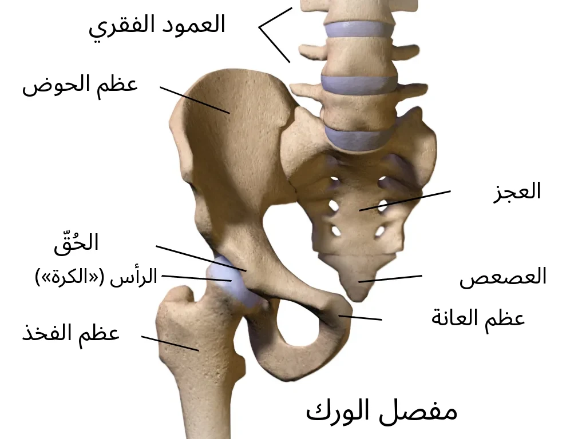
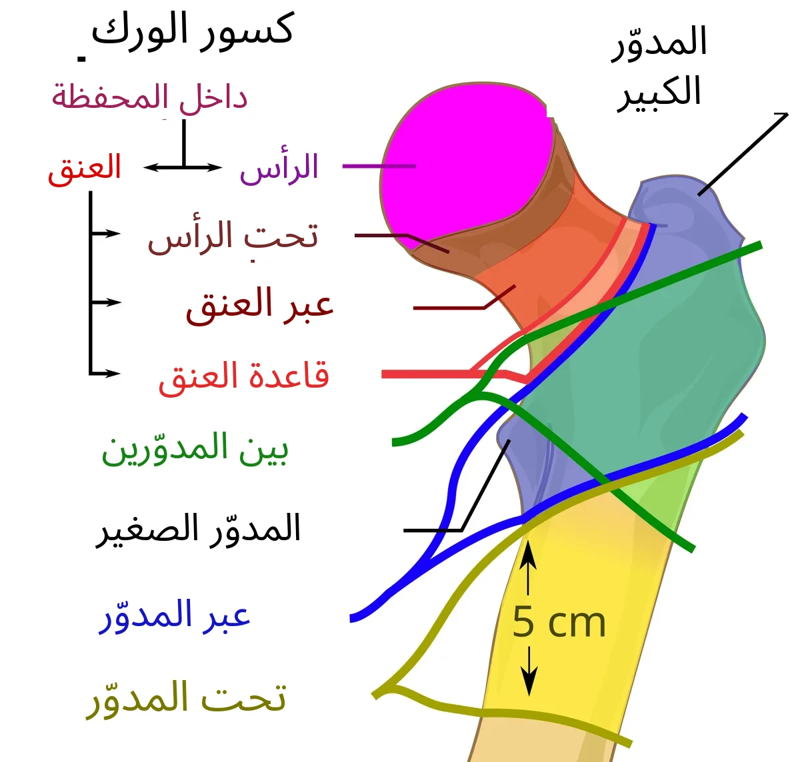
من الطوارئ إلى القسم
يُشخَّص الكسر في قسم الطوارئ بالفحص وصورة الأشعة. بعد ذلك تُنقلون إلى قسم جراحة العظام وتنتظرون العملية هناك.
- إلى أن يسمح الطاقم الطبي، لا تحاولوا النهوض أو المشي بأنفسكم. سيساعدكم الطاقم على تغيير الوضعية في السرير، والعناية بالنظافة، والاستعداد للعملية بأمان.
- يُعالَج الألم فورًا ويُفحص بانتظام. إذا اشتد الألم — اطلبوا مسكّنًا. إذا لم تكفِ الأدوية العادية، قد يُستخدم إحصار عصبي (حقنة مسكّنة قرب العصب).
- يُستغل هذا الوقت لإجراء الفحوص، وعند الحاجة لتحضير الجسم للعملية.
المصدر: NICE CG124, 1.3; AAOS 2021
تحضير الجلد قبل العملية
قبل العملية سيساعدكم الطاقم على تنظيف الجلد. وبحسب أنظمة المستشفى، قد تُستخدم لذلك مناديل مطهّرة خاصة أو وسائل أخرى. هذا التنظيف يقلّل عدد الجراثيم على الجلد، لكنه وحده لا يضمن منع العدوى.
- أبلغوا الطاقم إذا كانت لديكم حساسية من الصابون أو المطهّرات أو الكلورهيكسيدين.
- لا تحلقوا الجلد في منطقة العملية بأنفسكم.
- أبلغوا إذا كان هناك جرح أو احمرار أو تهيّج في الجلد.
المصدر: WHO (SSI); CDC, 2017
لماذا حقنة كليكسان
بعد كسر الفخذ يزداد خطر تكوّن الجلطات. لذلك يقيّم الطاقم الطبي خطر الجلطات والنزيف ويصف الوقاية. ومن الأدوية المستخدمة الإينوكسابارين (كليكسان). قبل العملية قد يُعطى إذا تأجّلت العملية؛ ويعتمد وقت إعطائه على خطة العملية والتخدير.
- إذا كان التخدير النخاعي مخططًا، فعادةً يلزم 12 ساعة على الأقل بين الجرعة الوقائية من الإينوكسابارين وحقنة الظهر. وبعد جرعة علاجية أعلى تكون الفترة 24 ساعة على الأقل. عند اضطراب وظائف الكلى وعوامل خطر أخرى، قد يطلب طبيب التخدير إجراءات أمان إضافية. ويمكن أيضًا إجراء العملية بتخدير عام.
- بعد العملية تُستأنف الوقاية من الجلطات عندما يكون ذلك آمنًا. إذا أُجري تخدير نخاعي، تُعطى أول جرعة وقائية من الإينوكسابارين بعد 12 ساعة على الأقل من حقنة الظهر؛ ويُؤخذ في الحسبان أيضًا وقت العملية وخطر النزيف ووجود قسطرة. يحدد الطاقم الطبي الوقت الدقيق.
- إذا كنتم تتناولون في البيت أدوية لتمييع الدم — أخبروا الطبيب بذلك حتمًا.
المصدر: AAOS 2021; NICE NG89; ASRA 2018, 2025; Lovenox (FDA)
الطعام والشراب والأدوية قبل العملية
- بما أن العملية عاجلة، فقد يتغيّر موعدها الدقيق. لا تأكلوا ولا تشربوا دون إذن الطاقم الطبي. أخبروا حتمًا متى أكلتم أو شربتم آخر مرة. إذا تأجّلت العملية، استفسروا من الطاقم متى يُسمح بالشرب وكيف ستُعوَّض السوائل لتجنّب الجفاف.
- أخبروا الأطباء بكل الأدوية، وخاصةً أدوية تمييع الدم: الوارفارين (Coumadin)، الأبيكسابان (Eliquis)، الريفاروكسابان (Xarelto)، الدابيغاتران (Pradaxa)، الكلوبيدوغريل (Plavix). فهي تؤثر في تخثر الدم وفي اختيار التخدير؛ وأحيانًا يلزم الانتظار قبل العملية أو تصحيح تأثيرها.
- أخبروا الطبيب حتمًا إذا كنتم تتناولون الإنسولين أو أدوية أخرى للسكري، وخاصةً إمباغليفلوزين أو داباغليفلوزين. اذكروا وقت آخر جرعة. في العملية العاجلة يقرر الطبيب أي الأدوية يُوقف مؤقتًا، وكيف يُراقَب السكر، وهل يلزم فحص الكيتونات. بعض الأدوية تزيد خطر مضاعفة خطيرة — الحماض الكيتوني، حتى لو لم يكن السكر مرتفعًا جدًا. لا تتناولوا الأدوية ولا توقفوها من تلقاء أنفسكم.
- أفراد العائلة: أحضروا قائمة بكل الأدوية (أو العبوات نفسها) التي يتناولها المريض في البيت.
المصدر: ASA 2017, 2023; NICE CG124, 1.2.2; AAOS 2021; ADA 2026
أنواع العمليات
في كسر عنق الفخذ دون إزاحة قد يقترح الجرّاح التثبيت ببراغٍ أو بأداة معدنية خاصة. وأحيانًا يُدرس استبدال جزء من المفصل. في كسر عنق الفخذ مع إزاحة لدى المرضى المسنين يُنصح عادةً باستبدال جزئي أو كامل للمفصل. ويُدرس الاستبدال الكامل بحسب القدرة على الحركة سابقًا والصحة العامة والاستقلالية المتوقعة بعد التعافي. الكسر بين المدورين نوع آخر من كسور الجزء العلوي من عظم الفخذ، وليس كسرًا في العنق. يمكن تثبيته بصفيحة مع برغي منزلق أو بمسمار داخل النخاع؛ وفي الأنواع غير المستقرة يُستخدم المسمار عادةً. القرار النهائي للجرّاح.
المصدر: AAOS 2021; NICE CG124, 1.6; AAOS OrthoInfo
متى تُجرى العملية
- يُسعى لإجراء العملية في أقرب وقت ممكن — عادةً في يوم الدخول أو في اليوم التالي (NICE)، خلال 24–48 ساعة (AAOS).
- في إسرائيل تتابع وزارة الصحة نسبة المرضى الذين تُجرى لهم عملية بسبب كسر عنق الفخذ خلال 48 ساعة من إدخالهم إلى المستشفى. وبلغت النسبة على المستوى الوطني 89% في عام 2024.
- إذا اكتُشفت اضطرابات صحية خطيرة، يقدّم الطاقم العلاج اللازم والتحضير في الوقت نفسه، ويحرص على تجنّب تأخير غير مبرّر للعملية.
المصدر: NICE CG124, 1.2; AAOS 2021؛ وزارة الصحة، تقرير 2013–2024
بعد العملية
- النهوض: عادةً في اليوم التالي للعملية مع أخصائي العلاج الطبيعي، إذا سمحت الحالة. الحركة المبكرة تساعد على منع الجلطات والتهاب الرئة وقرح الفراش.
- تحميل الوزن على الساق: بعد كثير من عمليات كسر الورك يُسمح لكم بتحميل وزن الجسم على الساق التي خضعت للعملية بقدر ما يسمح به الألم. لا حاجة للضغط عليها بقوة متعمدة. اسألوا الطبيب عن مقدار الوزن المسموح لكم بوضعه على الساق.
- بعد استبدال المفصل قد تلزم احتياطات خاصة عند الجلوس والانحناء والنوم (عادةً في الأسابيع الستة الأولى) لمنع خلع المفصل الاصطناعي. وهي تعتمد على المدخل الجراحي — وسيشرح لكم الجرّاح وأخصائي العلاج الطبيعي ما يلزمكم منها (AAOS OrthoInfo).
- تسكين الألم: منتظم، لتتمكنوا من الحركة والتمارين.
- قد تستمر الوقاية من الجلطات بعد الخروج من المستشفى أيضًا. في كسور الفخذ تُستخدم غالبًا حقن أدوية تقلّل تخثر الدم. وبحسب NICE، تُوصف الوقاية عادةً لمدة شهر إذا كان خطر الجلطات أعلى من خطر النزيف. يحدد الطبيب الدواء والمدة. لا توقفوا العلاج الموصوف من تلقاء أنفسكم.
- يعمل على التأهيل فريق: الجرّاح، طبيب باطني أو أخصائي طب الشيخوخة، الممرضات، أخصائي العلاج الطبيعي، المعالج الوظيفي.
- قبل الخروج ناقشوا مع الطبيب فحص هشاشة العظام، وطرق الوقاية من السقوط، وخطة التأهيل اللاحقة.
المصدر: NICE CG124, 1.6–1.8; NICE NG89, 1.11.2; AAOS 2021; ACCP 2012
التشوّش الذهني (الهذيان) وكيف تساعد العائلة
لدى كبار السن، بعد الكسر والعملية، قد يظهر تشوّش مفاجئ: يخلط الشخص بين الزمان والمكان، ويصبح قلقًا أو على العكس نعسانًا. قد يبدأ التشوّش حتى قبل العملية. وهو عادةً مؤقت، لكنه أحيانًا يستمر مدة أطول، ويحتاج دائمًا إلى تقييم الطاقم الطبي. أبلغوا الطاقم به فورًا.
- أحضروا النظارات وجهاز السمع وطقم الأسنان.
- زوروا كثيرًا، تحدثوا بهدوء، وذكّروا الشخص أين هو وما هو اليوم.
- أخبروا الطاقم كيف كان الشخص قبل الإصابة — هذا يساعد على ملاحظة التغيّرات.
المصدر: NICE CG124, 1.8.3; NICE CG103
متى يجب طلب المساعدة فوراً
أبلغوا الممرضة فورًا إذا كنتم في المستشفى. بعد الخروج، تواصلوا بصورة عاجلة مع القسم أو اطلبوا المساعدة الطبية عند الحمى، أو احمرار أو تورم متزايد، أو إفرازات من الجرح، أو ألم جديد وشديد في الفخذ، أو إذا توقفت الساق فجأة عن حمل الوزن أو تغيّر وضعها، أو تورم وألم في ربلة الساق. عند حدوث ضيق مفاجئ في التنفس أو ألم في الصدر أو إغماء أو صعوبة شديدة في التنفس، اتصلوا فورًا بالإسعاف على الرقم 101 (نجمة داود الحمراء).
الساعات الأولى بعد العملية: كيف تساعدون ولا تعيقون
- وقت خاص. الساعات الأولى واليوم الأول بعد العملية وقت يُراقَب فيه المريض باهتمام خاص. في معظم الحالات يمرّ كل شيء بهدوء، لكن أحيانًا تكون المساعدة مطلوبة بسرعة كبيرة. لذلك يجب أن يبقى الطريق إلى المريض وإلى المعدّات الطبية مفتوحًا دائمًا.
- الممرضة تفحص. بعد العودة إلى القسم، تفحص الممرضة بانتظام ضغط الدم، والنبض، ومعدّل التنفّس، ونسبة الأكسجين في الدم، والحرارة، ومستوى الوعي، وتفحص أيضًا منطقة العملية. في قسمنا يكون ذلك عادةً: فور الوصول من غرفة العمليات، ثم بعد ساعة، ثم بعد ساعة أخرى، ثم بعد ساعتين، وبعد ذلك كل أربع ساعات خلال اليوم الأول. وعند الحاجة تُجرى الفحوص بشكل أكثر تكرارًا. هذه متابعة مخطّطة، ولا تعني بالضرورة أن هناك مشكلة. إذا وُصف الإينوكسابارين، كليكسان، فبعد بعض عمليات العظام في قسمنا تُعطى أول حقنة بعد العملية عادةً بعد نحو اثنتي عشرة ساعة. يحدّد الطبيب الموعد بحسب السيطرة على النزيف، ونوع العملية، والتخدير النخاعي أو فوق الجافية.
- ممرّ مفتوح. من فضلكم، اتركوا ممرًّا مفتوحًا إلى السرير من كل الجهات. لا تضعوا الكراسي والحقائب ملاصقة للسرير أو في الممر. يجب أن تصل الممرضة والطبيب بسرعة إلى المريض، وأن تصل إليه عربة الأدوية والمعدّات.
- أشخاص أقل، أفضل. من الأفضل ألا يكون بجانب المريض في الوقت نفسه أكثر من شخص أو شخصين من الأقارب، إذا سمحت أنظمة القسم بذلك. عندما يقترب الطاقم من المريض، أفسحوا المكان من فضلكم. وإذا طُلب منكم الخروج من الغرفة، فنفّذوا الطلب. ويمكنكم لاحقًا السؤال عن السبب وطرح الأسئلة.
- فقط بإذن. بعد التخدير قد يحدث غثيان وقيء، وقد يختنق الشخص الضعيف. بعد العملية لا تعطوا المريض طعامًا أو شرابًا دون إذن الممرضة. عندما يستيقظ المريض بما يكفي، ويستطيع البلع بأمان، ولا توجد قيود أخرى، قد يُسمح له بالشرب والأكل. وأحيانًا يبدأون بكمية قليلة من الماء ثم ينتقلون إلى الطعام. متى وماذا يُسمح، يقرّر الفريق الطبي.
- الحواجز والزر. تُرفع حواجز السرير بقرار من الطاقم، حسب حالة المريض. وهي لا تناسب الجميع ولا تغني عن المساعدة عند النهوض. لا ترفعوا الحواجز ولا تخفضوها بأنفسكم. يجب أن يكون زر الاستدعاء في متناول اليد. لا تنهضوا إلا بإذن الفريق الطبي، وفي المرة الأولى بمساعدة الطاقم.
- إذا حدث خطب ما. إذا شعر المريض بالغثيان، أو صعب عليه التنفّس، أو أصبح نعسانًا بشكل غير معتاد، أو صعب إيقاظه، أو ظهر عليه تشوّش مفاجئ أو هياج شديد، أو اشتدّ الألم كثيرًا، أو تشرّبت الضمادة بالدم بسرعة، فنادوا الممرضة فورًا. اضغطوا زر الاستدعاء، وفي الحالة الصعبة نادوا الطاقم بصوت عالٍ. لا تعطوا بأنفسكم طعامًا أو شرابًا أو أدوية، ولا تحاولوا رفع المريض.
الوقاية من العدوى في المستشفى: ما يمكن أن يفعله المريض وأهله
- أيدٍ نظيفة. عقّموا أيديكم بمعقّم اليدين أو اغسلوها بالماء والصابون عند دخول الغرفة والخروج منها، وقبل لمس المريض وبعده. بعد استعمال المرحاض، وقبل الأكل، وعندما تكون الأيدي متّسخة بشكل ظاهر، اغسلوها بالماء والصابون. يوجد معقّم اليدين عادةً عند مدخل الغرفة أو بجانب السرير. يمكنكم أن تطلبوا بلطف من الطاقم تعقيم أيديهم قبل الفحص.
- الجرح والأنابيب. لا تلمسوا الجرح أو الضمادة أو أنبوب التصريف أو القسطرة أو أنبوب التسريب الوريدي، ولا تنزعوا الضمادة بأنفسكم. إذا تبلّلت الضمادة أو اتّسخت أو تحرّكت من مكانها، أخبروا الممرضة.
- لا تلمسوا ما يخصّ غيركم. لا تجلسوا على أسرّة المرضى الآخرين، ولا تلمسوا أجهزتهم أو جروحهم أو أغراضهم.
- لا تدخلوا غرف المرضى الآخرين. لا تتجوّلوا دون حاجة في الغرف والأقسام الأخرى في المستشفى. من الأفضل ألّا يزور المريضَ أقاربُ عندهم حرارة أو سعال أو رشح أو تقيّؤ أو إسهال حتى يتعافوا.
- بكتيريا مقاومة. بعض البكتيريا مقاومة للمضادات الحيوية. إذا اكتُشفت هذه البكتيريا لدى المريض، فقد يفرض الطاقم إجراءات وقاية إضافية، مثل العزل واستخدام الأردية والقفازات وقواعد خاصة للزيارات. تعتمد الإجراءات على نوع البكتيريا والحالة. إذا أبلغكم الطاقم بتعليمات خاصة، فالتزموا بها لحماية المرضى وأفراد العائلة.
- خطر أعلى. من المهم الالتزام بشكل خاص بإجراءات الوقاية عند وجود كسور مفتوحة، أو إصابة شديدة في الأنسجة الرخوة، أو مثبّت خارجي (أسلاك أو مسامير تثبيت تمرّ عبر الجلد إلى العظم)، أو مرض السكري، أو بعد عمليات معقّدة أو طويلة. في هذه الحالات قد يكون خطر المضاعفات الناتجة عن العدوى أعلى.
- أبلغوا الممرضة فورًا إذا: ظهرت حرارة أو قشعريرة؛ احمرار أو ألم يزداد أو تورّم أو إفرازات من الجرح؛ احمرار أو إفرازات حول مواضع دخول أسلاك أو مسامير المثبّت الخارجي عبر الجلد، أو حول موضع القسطرة الوريدية.
المصادر
- AAOS, Management of Hip Fractures in Older Adults, CPG 2021
- AAOS OrthoInfo, Hip Fractures
- NICE CG124, Hip fracture: management, Recommendations
- ACCP (CHEST), Prevention of VTE in Orthopedic Surgery Patients, 9th ed., 2012
- ASRA, Regional Anesthesia in the Patient Receiving Antithrombotic or Thrombolytic Therapy, 4th ed., 2018
- FDA, Lovenox (enoxaparin) label
- وزارة الصحة الإسرائيلية — البرنامج الوطني لمؤشرات الجودة، التقرير الملخّص 2013–2024
- Niv Y. et al., Israeli National Program for Quality Indicators: hip fracture repair within 48 hours, 2021
- ASA, Practice Guidelines for Preoperative Fasting, Anesthesiology 2017
- AAOS OrthoInfo, Total Hip Replacement (Other Precautions)
- CDC, Guideline for the Prevention of Surgical Site Infection, 2017
- نجمة داود الحمراء — الموقع الرسمي
- NICE NG89, Venous thromboembolism in over 16s, rec. 1.11.2–1.11.3
- ASRA, Regional anesthesia in the patient receiving antithrombotic or thrombolytic therapy, 5th ed., 2025
- ADA, Standards of Care in Diabetes—2026, section 16
- WHO, Global Guidelines for the Prevention of Surgical Site Infection (2016/2018)
- NICE CG103, Delirium: prevention, diagnosis and management
Video: Hip fracture — urgent surgery
What kind of fracture this is
A hip fracture is a break in the upper part of the thigh bone (femur). A femoral neck fracture is a break in the narrow part just below the rounded head of the femur. A break immediately below the head is called a subcapital fracture.
- In many older people the bones become more fragile, including because of osteoporosis. That is why a fracture can happen even in an ordinary fall.
- A hip fracture usually causes pain in the groin or upper thigh. Most people cannot stand or put weight on the injured leg, and the leg may look shorter and turned outward. However, with some fractures, a person may still be able to stand or walk despite the injury.
- If a hip fracture is still suspected despite a normal X-ray, magnetic resonance imaging (MRI) is recommended. If MRI is not available within 24 hours or cannot be performed, computed tomography (CT) may be used.
- In most cases surgery is recommended. It helps reduce pain and start getting your movement back sooner. Sometimes, with a stable fracture or special medical circumstances, other treatment options are considered.
Source: AAOS OrthoInfo; AAOS 2021; NICE CG124, 1.1.1
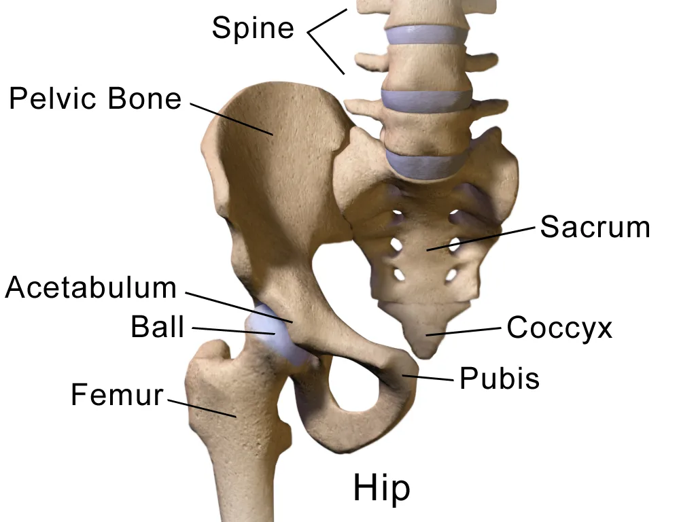
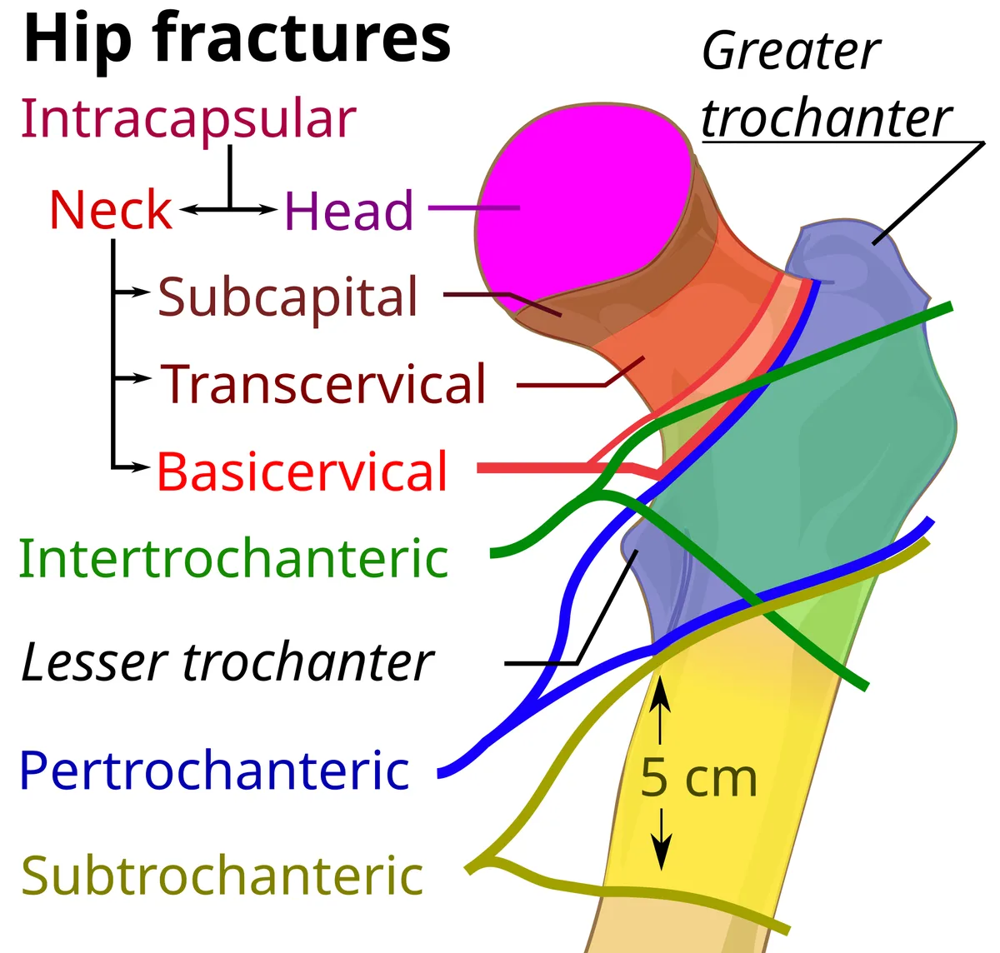
From the emergency department to the ward
The diagnosis is made in the emergency department (ER) by an examination and an X-ray. Then you are moved to the orthopedic ward, where you wait for surgery.
- Until the medical team allows it, do not try to get up or walk on your own. Staff will help you change position in bed, take care of hygiene, and get ready for surgery safely.
- Pain is treated right away and checked regularly. If the pain gets worse, ask for pain relief. If ordinary medicines are not enough, a nerve block (a pain-relieving injection near a nerve) may be used.
- This time is used to check test results and, if needed, to get the body ready for surgery.
Source: NICE CG124, 1.3; AAOS 2021
Skin preparation before surgery
Before surgery, staff will help clean your skin. Depending on hospital rules, special antiseptic wipes or other products may be used for this. This cleaning lowers the number of germs on the skin, but on its own it does not guarantee that infection will be prevented.
- Tell the staff if you are allergic to soap, antiseptics, or chlorhexidine.
- Do not shave the skin in the area of the surgery yourself.
- Tell the staff if you have a wound, redness, or skin irritation.
Source: WHO (SSI); CDC, 2017
Why the Clexane injection
After a hip fracture, the risk of blood clots goes up. So the medical team assesses the risk of clots and of bleeding and prescribes prevention. One of the medicines is enoxaparin (Clexane). It may be given before surgery if the surgery is postponed; the timing of the dose depends on the surgery plan and the anesthesia.
- If spinal anesthesia is planned, there usually needs to be at least 12 hours between a preventive dose of enoxaparin and the injection in the back. After a treatment (higher) dose, the interval is at least 24 hours. If kidney function is reduced or there are other risk factors, the anesthesiologist may require extra safety measures. The surgery can also be done under general anesthesia.
- After surgery, clot prevention is restarted when it is safe. If spinal anesthesia was used, the first preventive dose of enoxaparin is given no earlier than 12 hours after the spinal injection; the length of the surgery, the risk of bleeding, and whether there is a catheter are also taken into account. The medical team decides the exact timing.
- If you take blood-thinning medicines at home, be sure to tell your doctor.
Source: AAOS 2021; NICE NG89; ASRA 2018 and 2025; Lovenox label (FDA)
Food, drink, and medicines before surgery
- Because the surgery is urgent, its exact time may change. Do not eat or drink without permission from the medical team. Be sure to tell them when you last ate or drank. If the surgery is postponed, ask the staff when you are allowed to drink and how fluids will be given to you so that you do not get dehydrated.
- Tell the doctors about all your medicines, especially blood thinners: warfarin (Coumadin), apixaban (Eliquis), rivaroxaban (Xarelto), dabigatran (Pradaxa), clopidogrel (Plavix). They affect blood clotting and the choice of anesthesia; sometimes you need to wait before surgery or their effect needs to be adjusted.
- Be sure to tell the doctor if you take insulin or other diabetes medicines, especially empagliflozin or dapagliflozin. Say when you took the last dose. For urgent surgery, the doctor will decide which medicines to hold for now, how to monitor blood sugar, and whether ketones need to be checked. Some medicines raise the risk of a dangerous complication — ketoacidosis — even when blood sugar is not very high. Do not take or stop medicines on your own.
- Family members: bring a list of all the medicines the patient takes at home (or the packages themselves).
Source: ASA 2017 and 2023; NICE CG124, 1.2.2; AAOS 2021; ADA 2026, section 16
Types of surgery
For a hip fracture without displacement, the surgeon may suggest fixing the bone with screws or a special metal device. Sometimes replacing part of the joint is considered. For a displaced femoral neck fracture in older patients, a partial or total joint replacement is usually recommended. A total replacement is considered based on how well you moved before, your general health, and how independent you are expected to be after recovery. A trochanteric fracture is a different type of fracture of the upper thigh bone, not a femoral neck fracture. It may be fixed with a plate with a sliding screw or an intramedullary nail (a rod inside the bone); for unstable types a nail is usually used. The final choice is made by the surgeon.
Source: AAOS 2021; NICE CG124, 1.6; AAOS OrthoInfo
When the surgery happens
- The aim is to do the surgery as early as possible — usually on the day of admission or the next day (NICE), within 24–48 hours (AAOS).
- In Israel, the Ministry of Health monitors the percentage of patients who undergo surgery for a hip fracture within 48 hours of being admitted as inpatients. The nationwide figure was 89% in 2024.
- If dangerous health problems are found, the team gives the needed treatment and preparation at the same time, trying to avoid unjustified delay of the surgery.
Source: NICE CG124, 1.2; AAOS 2021; Israel Ministry of Health, report 2013–2024
After surgery
- Getting up: usually the day after surgery, with a physical therapist, if your condition allows. Early movement helps prevent blood clots, pneumonia, and pressure sores.
- Putting weight on the leg: after many hip fracture operations, you may put as much of your body weight on the operated leg as your pain allows. You do not need to push down forcefully. Ask your doctor how much weight bearing is allowed for you.
- After a joint replacement, special precautions when sitting, bending, and sleeping may be needed (usually for the first 6 weeks) so that the implant does not come out of the socket (dislocate). They depend on the surgical approach — the surgeon and physical therapist will explain which ones you need (AAOS OrthoInfo).
- Pain relief: regular, so that you can move and do your exercises.
- After surgery, clot prevention may continue after you leave the hospital. For hip fractures, injections of medicines that reduce blood clotting are often used. According to NICE, prevention is usually prescribed for a month if the risk of clots is greater than the risk of bleeding. The doctor decides the specific medicine and how long to take it. Do not stop the prescribed treatment on your own.
- A team works on your recovery: the surgeon, an internist or geriatrician, nurses, a physical therapist, and an occupational therapist.
- Before discharge, talk with your doctor about testing for osteoporosis, ways to prevent falls, and the plan for further rehabilitation.
Source: NICE CG124, 1.6–1.8; NICE NG89, 1.11.2; AAOS 2021; ACCP 2012
Confusion (delirium) and how family members can help
In older people, sudden confusion can appear after a fracture and surgery: the person mixes up time and place and becomes restless or, on the contrary, sleepy. Confusion can begin even before the surgery. It is usually temporary, but sometimes it lasts longer and always needs to be assessed by the medical team. Tell the staff about it right away.
- Bring glasses, a hearing aid, and dentures.
- Visit more often, speak calmly, and remind the person where they are and what day it is.
- Tell the staff what the person was like before the injury — this helps them notice changes.
Source: NICE CG124, 1.8.3; NICE CG103
When to get help urgently
In the hospital, tell the nurse right away. After discharge, contact the ward urgently or get medical care if you have a fever, increasing redness, swelling, or discharge from the wound, new severe pain in the hip, if the leg suddenly cannot hold your weight or changes position, or if you have swelling and pain in the calf. If you have sudden shortness of breath, chest pain, fainting, or severe difficulty breathing, call an ambulance right away at 101 ("Magen David Adom").
The first hours after surgery: how to help without getting in the way
- A special time. The first hours and the first day after surgery are a time when the patient is watched especially closely. Most of the time everything goes calmly, but sometimes help is needed very quickly. That is why the way to the patient and to the medical equipment must always stay clear.
- The nurse checks. After returning to the ward, the nurse regularly checks blood pressure, pulse, breathing rate, blood oxygen level, temperature and level of consciousness, and also examines the surgical site. On our ward this is usually done on arrival from the operating theatre, then after one hour, after another hour, then after two hours, and then every four hours for the first day. Checks are done more often if needed. This is planned monitoring and does not necessarily mean that something is wrong. If enoxaparin (Clexane) is prescribed, the first postoperative injection on our ward is usually given about twelve hours after certain orthopaedic operations. The doctor decides the timing based on whether surgical bleeding is controlled, the type of operation, and any spinal or epidural anaesthesia.
- A clear path. Please leave a clear path to the bed on all sides. Do not put chairs or bags right next to the bed or in the way. The nurse and doctor must be able to reach the patient quickly, and the trolley with medicines and equipment must be able to get through.
- Fewer people is better. It is best if no more than one or two relatives are with the patient at the same time, if the ward rules allow it. When the staff come to the patient, please make room. If you are asked to leave the room, please do so. You can ask about the reason and ask questions later.
- Only with permission. After anaesthesia there can be nausea and vomiting, and a weak person may choke. After surgery, do not give the patient food or drink without the nurse’s permission. When the patient is awake enough, can swallow safely and there are no other restrictions, they may be allowed to drink and eat. Sometimes they start with a small amount of water and then move on to food. When and what is allowed is decided by the medical team.
- Rails and the button. Bed rails are raised when the staff decide, depending on the patient’s condition. They are not suitable for everyone and do not replace help with getting up. Do not raise or lower the rails yourself. The call button should be within reach. Get up only with the medical team’s permission, and the first time with the staff’s help.
- If something is wrong. If the patient feels sick, finds it hard to breathe, becomes unusually drowsy or hard to wake, suddenly becomes confused or very restless, the pain gets much worse, or the dressing quickly soaks with blood, call the nurse at once. Press the call button, and if the situation is serious, call the staff loudly. Do not give food, drink or medicines yourself, and do not try to lift the patient.
Preventing infection in hospital: what patients and families can do
- Clean hands. Clean your hands with hand sanitiser or soap and water when entering and leaving the room, and before and after touching the patient. Wash your hands with soap and water after using the toilet, before eating and whenever your hands are visibly dirty. Hand sanitiser is usually by the room entrance or next to the bed. You may politely ask staff to clean their hands before an examination.
- Wound and tubes. Do not touch the wound, dressing, drain, catheter or IV line, and do not remove the dressing yourself. If the dressing gets wet, dirty or slips, tell the nurse.
- Leave others' things alone. Do not sit on other patients' beds, and do not touch their equipment, wounds or belongings.
- Avoid other patients' rooms. Do not walk around other rooms and wards of the hospital without need. Relatives with fever, cough, runny nose, vomiting or diarrhoea should not visit until they have recovered.
- Resistant bacteria. Some bacteria are resistant to antibiotics. If these bacteria are found in a patient, staff may introduce additional precautions, such as isolation, gowns and gloves, or special visiting rules. The measures depend on the type of bacteria and the situation. If staff give you special precautions, follow them carefully to help protect patients and families.
- Higher risk. Take extra care to prevent infection with open fractures, significant soft tissue injuries, external fixators (pins or wires pass through the skin into the bone), diabetes, and after complex or prolonged operations. The risk of infectious complications may be higher in these situations.
- Tell the nurse straight away if: there is fever or chills; redness, increasing pain, swelling or discharge from the wound; redness or discharge around the external fixator pin or wire sites, or around the IV catheter site.
Sources
- AAOS, Management of Hip Fractures in Older Adults, CPG 2021
- AAOS OrthoInfo, Hip Fractures
- NICE CG124, Hip fracture: management, Recommendations
- ACCP (CHEST), Prevention of VTE in Orthopedic Surgery Patients, 9th ed., 2012
- ASRA, Regional Anesthesia in the Patient Receiving Antithrombotic or Thrombolytic Therapy, 4th ed., 2018
- FDA, Lovenox (enoxaparin) label
- Israel Ministry of Health — National Program for Quality Indicators, summary report 2013–2024
- Niv Y. et al., Israeli National Program for Quality Indicators: hip fracture repair within 48 hours, 2021
- ASA, Practice Guidelines for Preoperative Fasting, Anesthesiology 2017
- AAOS OrthoInfo, Total Hip Replacement (Other Precautions)
- CDC, Guideline for the Prevention of Surgical Site Infection, 2017
- Magen David Adom — official site
- NICE NG89, Venous thromboembolism in over 16s, rec. 1.11.2–1.11.3
- ASRA, Regional anesthesia in the patient receiving antithrombotic or thrombolytic therapy, 5th ed., 2025
- ADA, Standards of Care in Diabetes—2026, section 16
- WHO, Global Guidelines for the Prevention of Surgical Site Infection (2016/2018)
- NICE CG103, Delirium: prevention, diagnosis and management